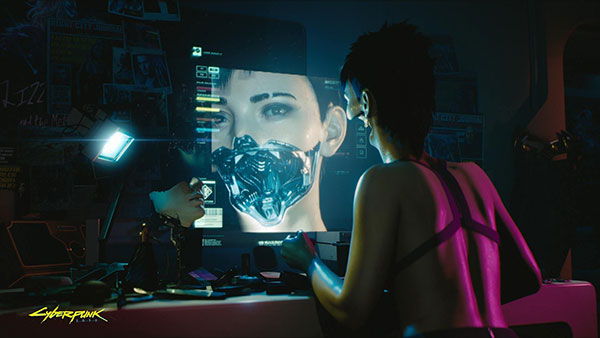

Cyberpunk 2077 – gameplay
OGÓLNE INFO
Cyberpunk 2077 jest grą aRPG z elementami FPS (ang. first-person shooter – strzelanka z perspektywy pierwszej osoby), dlatego na początku z pewnością będzie można dostosować postać według własnych preferencji. Gracze mogą wybierać spośród różnych klas oraz ścieżek rozwoju. Wśród dostępnych wariantów podstawowych można wymienić: Netrunner (haker), Techie (technik) i Solo (najemnik) oraz dwie poboczne role: Rocketboy i Corporate. Gra ma oferować bardzo swobodny sposób modyfikacji cech postaci, dzięki czemu każdy gracz będzie mógł w pełni skupić się na indywidualnym doświadczeniu.

ROZGRYWKA
Podczas tworzenia bohatera można nie tylko dostosować jego wygląd, ale też określić cechy charakteru, takie jak np. inteligencja, zwinność, siła czy zdolności techniczne. Wszystko to ma mieć niebagatelny wpływ na wydarzenia i fabułę. Jednym z elementów tego uniwersum są też powszechne modyfikacje ciała, które doskonale wpisują się w konwencję gry RPG.
Jedną z największych zalet Cyberpunk 2077 ma być zachwycająca oprawa graficzna, niemalże zacierająca różnice między gameplayem a cutscenkami (przerywnikami wideo). Widok FPP (ang. first-person perspective – perspektywa pierwszoosobowa) i niezwykle realistyczna grafika mają zapewnić niespotykaną dotychczas immersję.
Cyberpunk 2077 umożliwi graczom eksplorację otwartego świata, oferującego ogrom możliwości. Mają na niego składać się m.in. czarny rynek, nieruchomości do kupienia we wszystkich sześciu dzielnicach, dziesiątki zadań pobocznych czy setki broni, dodatków i akcesoriów. Część z nich będzie dostępna dla gracza dopiero po osiągnięciu odpowiedniej reputacji lub zdobyciu wymaganej kwoty.
WYBORY I ICH NASTĘPSTWA
Tak jak większość gier z gatunku RPG Cyberpunk 2077 ma w dużej mierze opierać się na prowadzonych rozmowach z napotkanymi postaciami. System dialogowy ma być podobno wyjątkowo szeroko rozbudowany. Nieliniowa ścieżka prowadzenia interakcji ma wpływ na fabułę, kreację świata i rozwój postaci. System walki może natomiast przyjąć dwa oblicza. Oprócz klasycznego wykorzystania broni różnej kategorii gracze będą mogli skupić się na skradaniu się i cichym pokonywaniu przeciwników.
Cyberpunk 2077 jest grą przeznaczoną dla osób pełnoletnich. W rozgrywce mogą więc pojawić się: niecenzuralne słownictwo, brutalne sceny lub nawiązania o charakterze erotycznym.